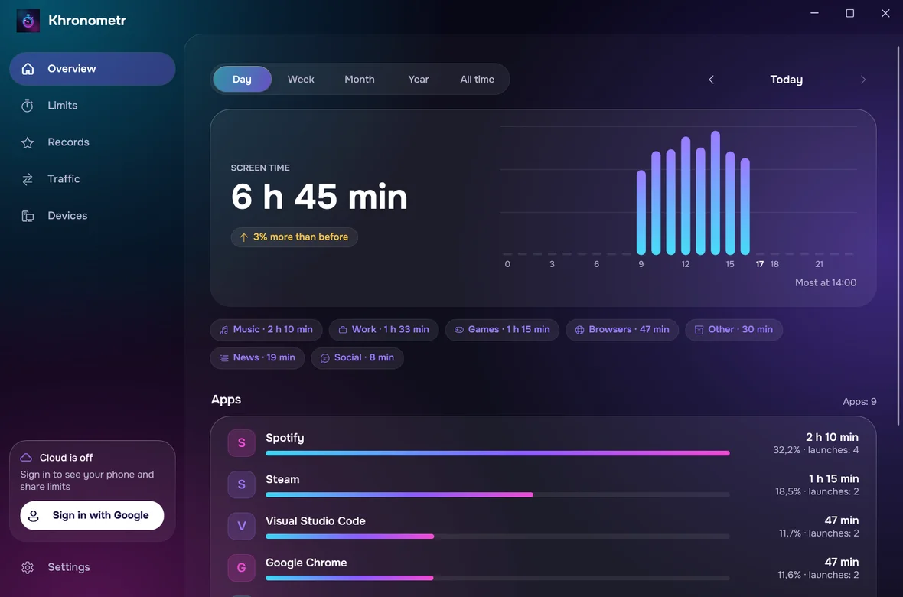
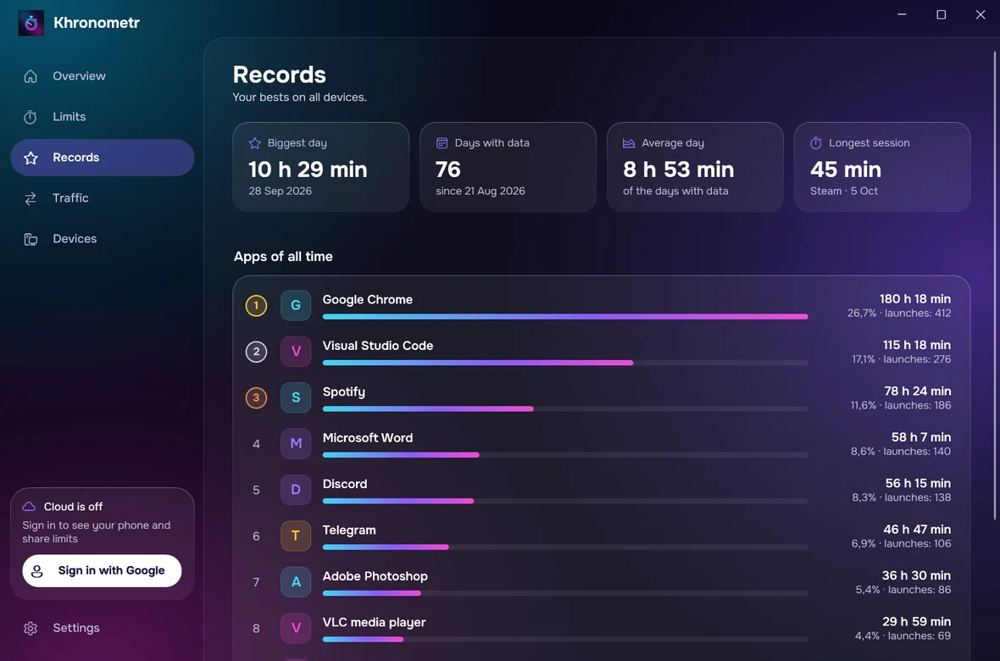
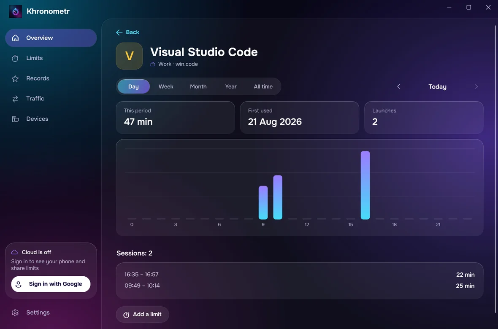

Windows 版フロノメトル
すべてのスクリーンタイムを、PC でも
パソコン用の本格アプリ：プログラムやゲームの時間、スマホとタブレットの履歴、上限、記録を 1 つのウィンドウで。
Windows 10 / 11、64ビット専用 · 70.3 MB · 無料 · 27言語
6時間ごとにアップデートを確認し、オフにしない限り自動でインストールします。すべてのアップデートは電子署名で検証されます。



インストール方法
- 1
ダウンロードして実行
上のボタンでファイルをダウンロードして実行してください。フロノメトルがインストールを提案します。あなたのユーザーだけに入り、管理者権限は不要です。スタートメニューに表示されます。
- 2
Windows の警告が出たら
Windows に「Windows によって PC が保護されました」と表示されたら、詳細情報をクリックし、実行をクリックしてください。有料の署名がないアプリでは、こうなります。フロノメトルが PC に追加するものは、下の質問に載っています。
- 3
Google ドライブに接続
フロノメトルのウィンドウで「Google ドライブに接続」をクリックし、スマホと同じアカウントを選びます。すると、スマホやタブレットもここに表示されます。
- 4
完了
フロノメトルは、ウィンドウを閉じても計測を続けます。時計の隣(トレイ)に常駐し、Windows と一緒に起動します。設定でオフにできます。
できること
すべての統計
日・週・月・年・全期間：グラフ、カテゴリ、アプリごとの時間 — 全デバイスまとめて、または 1 台ずつ。
すべての履歴
スマホとタブレットの使用時間、より古い Android の履歴、Steam のプレイ時間を確認できます。許可すれば、Windows 自体のジャーナルから、おおよそ直近1〜2か月分の使用時間と通信量も加えられます。
上限も PC で
上限を PC 上で直接作成・変更できます。ログインしていればスマホにも適用され、ログインしていなければこの PC だけに適用されます。「時間です」画面はいつでも閉じられます。
記録と通信量
いちばん使った日、最長のセッション、全期間のよく使うプログラム上位、プログラムごとの通信量を表示します。通信量は Windows のジャーナルをインポートすると表示され、その際に管理者権限を一度だけ求めます。
自動で更新
新しいバージョンは6時間ごとに探し、自動でインストールします。作者の電子署名がないファイルは決してインストールしません。
あなたの Google ドライブだけ
あなた自身のドライブの非表示フォルダで同期します。サーバーも広告もありません。
よくある質問
Windows の警告はどんな画面？
「Windows によって PC が保護されました」という青いウィンドウに「Microsoft Defender SmartScreen は認識されないアプリの起動を停止しました…」と表示されます。テキストの下の詳細情報をクリックし、実行しないではなく実行をクリックします。
PC には何が追加されますか？
管理者権限なしで、あなたのユーザーにインストールされます。プログラムは %LOCALAPPDATA%\Programs\Khronometr に入り、スタートメニューのショートカット、インストールされているアプリの項目、自動起動が加わります。また、あなたのユーザーのタスク「Khronometr Watchdog」を作成し、実行中でなければ10分ごとに再起動します。Windows のジャーナルをインポートすることを選んだ場合に限り、Windows が管理者権限を一度求め、タスク「Khronometr Journal」が作成されます。このタスクは6時間ごとにジャーナルを Program Files 内のフォルダにコピーし、そのフォルダは管理者とあなただけが読めます。
Google でログインする必要はありますか？
いいえ。計測、記録、上限は、ログインしなくてもこの PC で動作します。スマホとタブレットをここで見たり、上限を共有したりするには、ログインしてください。
アンインストールするには？
Windows の設定 → アプリ → インストールされているアプリ → フロノメトル → アンインストール。これでプログラム、ショートカット、自動起動、Watchdog タスク、インストールされているアプリの項目が削除されます。ジャーナルのタスクを作っていた場合は、それに気づいて、自分自身と自分の Program Files フォルダを確認なしで削除します。通常はすぐに、遅くとも次回の実行時です。履歴は %LOCALAPPDATA%\Khronometr に残ります。消すにはそのフォルダを手動で削除し、同期を使っていた場合は Google ドライブの設定で Drive 上のコピーも削除してください。
新機能: 1.3.1
修正：Google へのサインインと、サインアウト中の Drive コピーの削除でブラウザーが開きませんでした。複数の Windows アカウントがある PC では、他の人の時間が含まれる可能性のある古いジャーナルの日を一度だけ削除します。インストール画面で続行の意味を説明します。
ファイルはどう確認しますか？
ダウンロードしたファイルの SHA-256 チェックサムが、次の値と一致する必要があります：
あなたのデータはあなたのもの
フロノメトルのサーバーも、広告も、トラッキングもありません。すべてはあなたのデバイスに、希望すればあなた自身の Google ドライブの非表示フォルダにも保存されます。アプリが行うわずかな外部リクエストは、プライバシーポリシーに載っています。
プライバシーポリシーを読むご質問・アイデア: support@pegasohlib.com